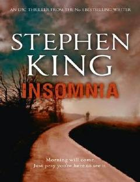

IUyqusizlikdan aziyat chekayotgan qahramonning g'ayritabiiy hodisalar va dahshatli sirlar bilan to'qnashuvi.
Ralph Roberts, Derry shahrida yashovchi keksa odam, uyqusizlikdan aziyat chekib, odamlar atrofidagi g'ayritabiiy aurani ko'ra boshlaydi. U o'z shahridagi dahshatli voqealar va o'lim farishtalariga o'xshash sirli mavjudotlar bilan to'qnash keladi. Bu roman inson ruhiyati va taqdirning murakkab bog'liqliklarini o'zida aks ettiradi.